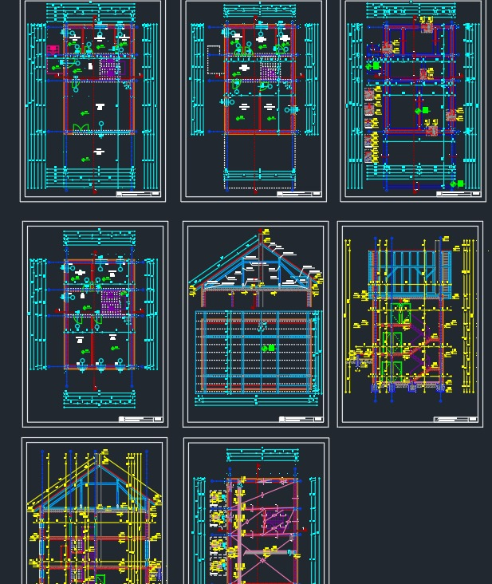
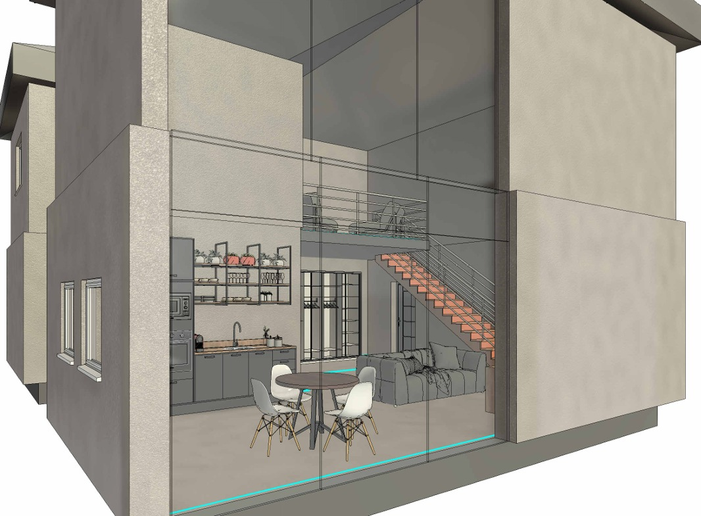

Projekti
Ovdje možete pogledati neke od mojih projekata izrađenih tijekom studija i samostalnog rada.

AutoCAD projekt
Projekt izrađen u programu AutoCAD koji obuhvaća tehničke crteže i različite elemente građevinskog projekta.
Pogledaj projekt →
Revit projekt
Projekt izrađen u Revitu u slobodno vrijeme kao vježba. Trenutno uključuje tlocrt i 3D prikaze kuće, a u planu je dodati još presjeke i ostale crteže.
Pogledaj projekt →